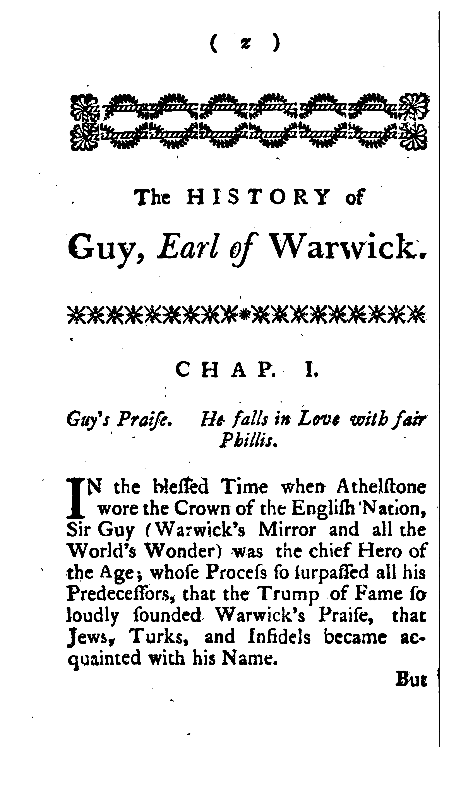
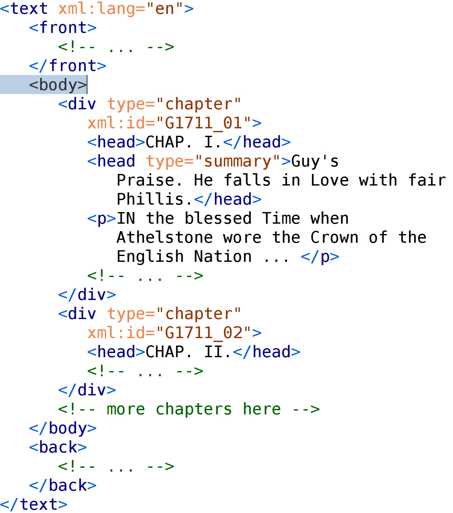
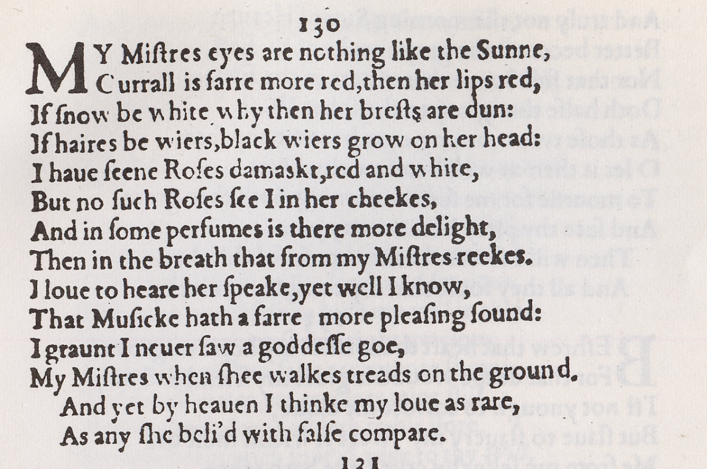
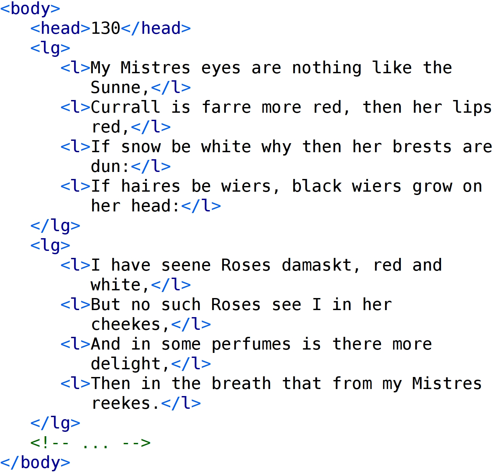
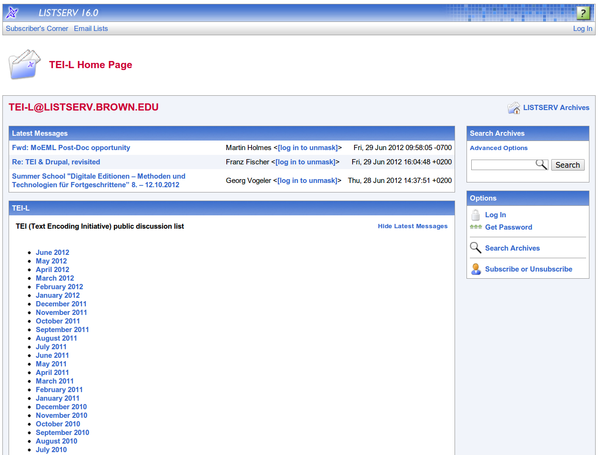
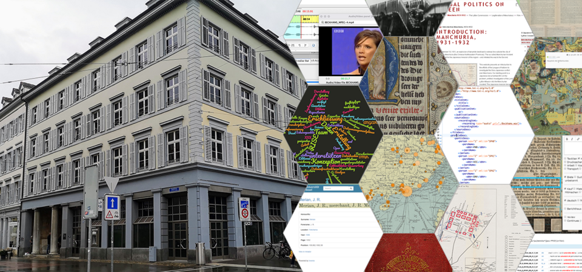

Introduction to TEI
Elena Spadini
Presentation online at: https://elespdn.github.io/talks/20220401_editions_crashCourse/teiIntro.html
Table of contents
- Markup
- XML
- TEI
- TEI basic structure
- Examples of TEI encoding
- TEI customization
- Software for working with TEI
- Multiple outputs
- Text encoding recap
- Modelling
- TEI in action
- Workflow
1.
Markup
It is a way of naming and characterizing the parts of a text in a formalized way.
Procedural MARKUP
Jane Austen wrote Price and Prejudice Descriptive MARKUP
MarkupJane Austen wrote Price and Prejudice
Visualizationname {font-weight: bold;} title {font-style: italic;}
Process<xsl:for-each select="//name">
separation of form and content
- multiple forms possible
- easier reuse (in different contexts)
- easier preservation
2.
XML
XML is application-, platform-, and vendor- independent
it is used in all fields and is widely supported by a vast range of tools and infrastructures
it facilitates the long-term preservation of data
XML Golden Rules
An element consists of a start-tag, optional content, and an end-tag. Miguel de Cervantes
An element may have attributes, each consisting of a name and a value. Miguel de Cervantes
An XML document may contain processing instructions or comments.<? xml-stylesheet type="text/css" href="visualize-tei-xml.css"?>
Elements and attributes are case sensitive. <name> ≠ <Name>
Empty elements can use a minimized tag syntax. <pb/> =
- An XML document is well formed when it complies with the XML syntax
- An XML document is valid against a schema
hello world!
salut monde!
- the XML declaration
- a namespace declaration
- a root element
- other elements, which might have content and attributes
- attributes, with names and values
3.
Text Encoding Initiative
3.1.
TEI basic structure
|  |  |
3.2.
Examples of TEI encoding
|  |  |
3.3.
TEI customization
XML document is well formed when it complies to XML syntax rules.
XML document is valid when it conforms to structural rules defined in a schema.
A schema allows to specify:
- which elements can appear as the root element of a document
- which elements and attributes can appear where
- names, datatypes, and default values for all attributes
In practice, a schema allows you to check the consistency of the encoding, for example every chapter must begin with a heading, or every strophe must include lines, or a reference to a persistent ID should be specified for each person.
Community-maintained TEI schemas
- tei_all
- tei_lite (light and basic encoding)
- tei_drama (performance texts)
- tei_speech (speech and spoken texts)
Each project should define its own schema, which represents in a structured and formalized way the understanding of and approach towards the text to be encoded (scientific choices).
The TEI modular system (modules and classes) helps in customizing the schema.
There are different schema languages (DTD, RNG, WSD) and the TEI uses RELAXNG (.rng, .rnc).
3.4.
Software for working with TEI
oXygen
XML editor with support for TEI encoding
TEI mailing list
3.5.
Multiple outputs
3.6.
Text encoding recap
- TEI is a vocabulary expressed using the XML syntax
- an XML document should be well-formed (XML rules) and valid (schema rules)
- a basic TEI document is composed of a
teiHeaderand atext - the TEI Guidelines are organized in chapters corresponding to the modules
4.
Data modelling
- The application of markup to a document is a scholarly activity
- Markup is never neutral or objective : interpretation is needed
- The markup scheme used for a project should result from a detailed analysis of the properties of the objects the project aims to use or create
5.
TEI in action
6.
Digital workflows
Thank you.
For more information, contact us at rise@unibas.ch
This presentation reuses materials from:
José Luis Losada Palenzuela, Markup, XML, TEI, https://editio.github.io/presentations/intro_sde_tei, 2021.
Lou Burnard, What do we mean by markup and why do we do it?, DHOXSS 2015.
Lou Burnard, TEI Basic Structure and Core Elements, DHOXSS 2015.
To know more
Burnard, Lou. What is the Text Encoding Initiative? How to add intelligent markup to digital resources. Marseille : OpenEdition Press, 2014. http://books.openedition.org/oep/679.
Burghart, Marjorie, and Elena Pierazzo. Digital Scholarly Editions: Manuscripts, Texts and TEI Encoding. https://teach.dariah.eu/course/view.php?id=32.
TEI Consortium. Learn the TEI. https://tei-c.org/support/learn/#section-2.
Introduction to TEI by Elena Spadini
(RISE Crash Course, 01.04.2022, University of Basel)
is licensed under CC BY-SA 4.0